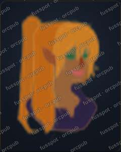
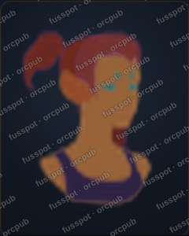

Artist card options
Screenshots of the running site. Each layout was injected into the real /artists/fusspot page at capture time, so the header, fonts, colours and art are the site's own, and no source code changed. Bracketed text is a placeholder for what the artist would write.
A · Column, links first Suggest
Name, bio and status, then the links, which are the point of the page. Two small watermarked examples come after, as a taste rather than a catalogue.
B · Split card
Closest to a Carrd profile: one example beside the name and links. Compact on desktop. On a phone it stacks into A with one picture.
C · No pictures
Nothing to scrape on the page. The pieces are described in a line of text, with a link to try them in the portrait maker, where they're seen in use.
The examples at actual size
This is the file a visitor or a scraper would get: 240×300, a quality-60 JPEG, with "fusspot · orcpub" tiled across the whole image, including the figure. The page shows it at 150px wide.


Worth deciding
- Which layout. A is my pick; C is the safest if you'd rather show no art at all.
- Watermark strength. This one is faint (26% white with a thin dark outline). A stronger one survives more cleanup but competes with the art.
- Watermark text. Artist name plus site, or the artist's name alone.
- Whether the link-preview image should get the same watermark. I'd say yes, since that's the copy that travels.